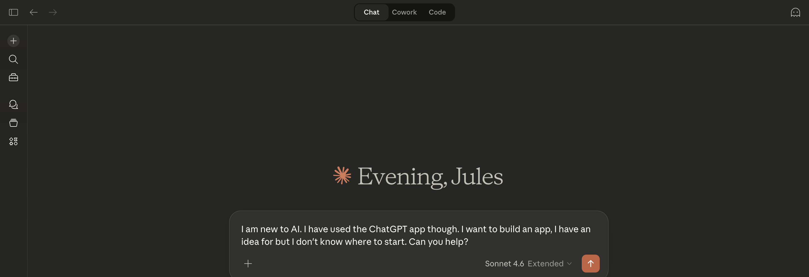

Your first win can be this simple
Open Claude, stay in Chat, ask one honest question, and let the rest come later.
Claude Helper is for people who want calm, clear help with Claude on a Mac. You are not behind. You do not need GitHub, Terminal, or Claude Code to start.

Open Claude, stay in Chat, ask one honest question, and let the rest come later.
A clear first step, simple language, and real screenshots instead of vague advice.
You do not need to understand repos, commands, folders, or extra Claude tools on day one.
Open Claude with less stress, get one useful result fast, and build confidence from there.
People who are opening Claude for the first time, or who still feel unsure where to click next.
You open Claude, send one message in Chat, and get a useful answer back without needing to touch anything technical.
These pages are here when you want more help. You do not need to open all of them today.
Learn the difference between Chat, Cowork, and Code in plain English.
Open mode guideUse this if something goes wrong, feels unclear, or does not open the way you expected.
Open help pageSee real screenshots and simple prompts once you are already inside Claude.
Open walkthroughOnly open this when a page asks you to work with files or folders on your Mac.
Open folder guideOpen these if you learn better by seeing real Claude screens instead of only reading.
Open screenshot pagesThis is for later, when you are ready to try a simple local project.
Open example app guide